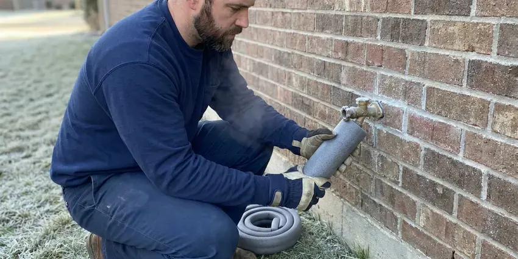

Water Line Repair in Newton, MA
Your meter is spinning with every tap off. That is a leak. We pinpoint it with ground microphones in Newton, MA.
- Stocked Service Trucks
- Meter-to-House Replacement
- Pressure tested before backfill
- Written Prices Up Front
Bring Your Water Pressure Back in Newton, MA
Our trucks carry copper, PEX and poly fittings, so most repairs finish in one visit.
Water Line Repair and Replacement for Newton, MA Homes
BWM Plumbing fixes water lines that broke at the meter coupling, under the driveway and right where the pipe enters the slab. Every repair is done to code. We pressure test the new section before backfilling, flush the line so sediment does not land in your faucet aerators, and leave the yard graded back the way we found it.
Our expertise includes:
- Trenchless pipe pulling for buried mains
- Galvanized-to-copper and galvanized-to-poly replacement
- Repair couplings and transition fittings at the meter

Additional Plumbing Maintenance Services in Newton, MA
Our maintenance and specialty plumbing services in Newton, MA catch small problems before they become emergencies.


Customers
Why Choose BWM Plumbing for Water Line Repair in Newton, MA?
A water line repair is mostly about the locate. Guessing means digging three holes. Our crew works with ground microphones, line tracers and tracer gas when needed to put the hole within a foot or two of the leak, which saves your lawn and a good share of the labor bill.
- Clean Backfill, Soil is compacted in lifts so the patch does not sink after the first rain.
- Written Pricing, You approve the price in writing before anyone opens the ground.
- Code Work, Repairs follow the plumbing code adopted where you live, with permits when required.
Citywide Coverage
Rural lots with long service runs and city lots with ten feet of pipe, both are normal work for us. A long run needs more time with the microphone. We trace the line first, then listen along it, which keeps the excavation accurate on long rural lines too.
Experienced Team
Our team includes people who have spent years on emergency crews. Night calls do not rattle them. They shut the water off first, keep the work area safe for kids and pets and explain each step as they go.
Safety-First Approach
We protect the house while we work. Shoe covers indoors. Drop cloths go down by the main shutoff, and any lawn or plants we move get set aside and put back when we finish.
Trusted Certified Newton Plumbing Services Professionals
At BWM Plumbing, we are proud to offer certified plumbing services throughout Newton, MA. Those papers on the wall mean something. Our plumbers hold recognized industry credentials, and they follow strict safety and quality rules on every repair, installation and maintenance call we run.
Call Us Now PHCC Plumbing Contractor Recognition
PHCC Plumbing Contractor Recognition Better Business Bureau (BBB) Accreditation
Better Business Bureau (BBB) Accreditation Angi Certified Pro
Angi Certified Pro ISO 9001 Quality Management Certification
ISO 9001 Quality Management CertificationWhat Our Water Line Service Covers in Newton, MA
PEX Water Line Repair in Newton, MA
PEX itself rarely fails underground, but the joints and the first few feet near the house take a beating. Rats and gophers sometimes chew it. A shovel or a fence post auger can nick it, and pipe left in the sun before it was buried can get brittle. We cut out the damaged section and install new pipe with crimp, clamp or expansion fittings, matched to the PEX brand already in the ground.

Main Water Line Replacement in Newton, MA
Replacement beats repair once a line has leaked two or three times, or when it is galvanized or polybutylene. Patching that kind of pipe tends to buy months, not years. We run new Type K copper or PEX from the meter to the house, typically finishing in one day whether we trench or pull the pipe. We pull the permit, set up the inspection and pressure test the new line before it is covered.
Commercial Water Line Services in Newton, MA
Besides repairs, BWM Plumbing handles service line upgrades when a commercial tenant needs more flow, like a restaurant adding a dish line or a second restroom. Bigger meters need bigger pipe. We size the line from the fixture count. Then we coordinate with the water provider on the tap and meter change, set the backflow assembly and get the inspection signed off, so the space can open on schedule.
Underground Leak Detection in Newton, MA
A ground microphone picks up the hiss of water escaping a pressurized pipe, even through a couple of feet of dirt. Some leaks barely make a sound. For those we push a hydrogen and nitrogen tracer gas into the drained line and sniff for it at the surface, a method that catches leaks too quiet for acoustic gear. Nearly every older home has a basement, so foundation drainage and sump pumps matter for keeping the lower level dry. Once the spot is marked, you get a written repair price before we dig.
Trenchless Water Line Repair in Newton
Trenchless work makes sense when the line runs under a driveway, patio or a row of mature shrubs. We dig a pit at the meter and another at the house. Then the new pipe gets pulled through underground. A pneumatic boring tool or a cable puller drags HDPE or PEX through the soil, or through the old pipe if it is a straight run, and most jobs wrap up in a single day.
Trenchless Water Line Replacement in Newton
A trench through a paver driveway or a mature garden can cost more to restore than the pipe itself. That is where trenchless pays off. We dig a pit at each end and pull HDPE or PEX through with a boring tool or pipe puller, either along the old route or through fresh soil next to it. Most replacements finish in a day. The new pipe carries its own manufacturer warranty.
Slab Leak Water Line Repair in Newton
A slab leak is a supply pipe leaking under the concrete floor of the house. Cast iron drains, galvanized supply lines and old lead service connections are still common in multi-family houses and older single-family homes. Signs include a warm spot on the floor, the sound of running water and a meter that moves with everything off. We pinpoint the leak with acoustic gear and thermal imaging. From there you have three choices: break the slab at the spot, reroute the line through the walls or attic, or skip the old under-slab pipe and repipe overhead with PEX. You get a price on every option.

Emergency Water Line Break Repair in Newton, MA
A full break can flood the yard and leave the house dry at the same time. Shutting the water off comes first. The crew pumps the hole, finds the break and decides whether a coupling will do or whether a section needs replacing, and if the repair will run past a few hours we set a temporary bypass to the house. Same-day repairs are the norm. We photograph the damage for your insurance or HOA.
Local Water Line Leak Repair in Newton, MA
Homeowners in Newton call us for the same handful of reasons: a wet yard, low pressure, rusty water, a big bill. It comes up week after week. Each one starts with a meter test and a walk along the pipe route, and most end with a single small pit and a repaired joint.
Our plumbers work Newton every day and know how the local water provider sets meters and curb stops. It speeds up the first call. We can usually tell on sight whether a leak is on your side of the meter or theirs, and when a full replacement needs a permit we already know the office and the inspector schedule.
BWM Plumbing at a Glance
- Fully licensed plumbing team covering Newton, MA
- Same-day appointments and 24/7 emergency response
- Clear written estimates, no hidden fees
- 4.9-star rated by 434+ Massachusetts customers
Newton Map
Newton Information
- Population
- 88,415
- Area codes
- 617/781/857
- Service area
- Newton and communities within 40 miles
- Nearby
- Brookline, Waltham, Cambridge, Somerville
Nearly every older home has a basement, so foundation drainage and sump systems matter for keeping the lower level dry. Shifting ground keeps bending and pulling on buried pipe, so water lines in Newton, MA crack at joints and couplings more than anywhere else.
Talk to a Plumber
Call BWM Plumbing for reliable plumbing work done by licensed pros in Newton, MA.
Our Specialized Plumbing Services in Newton, MA
At BWM Plumbing, we handle the full list of plumbing services across Newton, MA. We go from leak detection all the way to full system installations, for homes and commercial buildings, and we do it quickly at a fair price. Here are the core services we offer:


How a Water Line Repair Works in Newton, MA
A water line repair in Newton, MA follows the same three steps on almost every job: find it, fix it, test it.
Describe the Problem
Phone BWM Plumbing at (857) 335-4894 and tell us what is happening. We will ask if your meter moves with everything off.
Find the Leak
A plumber isolates the house, gauges the pressure and marks the leak with acoustic gear. Then we write up your options.
Fix It Right
Once you approve, the crew repairs or replaces the line with code-approved pipe and fittings. It gets a pressure test before backfill.
Frequently Asked Questions About Water Line Repair in Newton
Spot repairs on an accessible line usually run $350 to $1,500. Depth drives most of that. A trenched meter-to-house replacement is typically $1,800 to $5,500, and trenchless replacement often lands between $3,000 and $7,000 because of the equipment involved. The written price comes before we start.
Often the pipe itself is not covered. Damage it causes may be. Some homeowners carry separate service line coverage through their insurer or the water provider, which can pay for the repair or replacement of the buried line itself. We provide photos and an itemized invoice for your claim.
Keep trees and shrubs with big roots well away from the line. Mark the pipe route somewhere. Frozen pipes are a real winter risk across Massachusetts, especially during stretches of single-digit nights and strong wind. A pressure gauge on a hose bib tells you if the regulator is failing, and readings above 80 psi mean the line is under more stress than it should be. On galvanized lines, budgeting for a new line is cheaper than an emergency.
Much of the public water in Massachusetts is soft and slightly acidic, which is easy on fixtures but can slowly eat through copper pipe. Nearly every older home has a basement, so foundation drainage and sump pumps matter for keeping the lower level dry. Tree roots wrap and crush shallow lines over time, while mineral scale builds up inside older pipe and thins the wall. Galvanized pipe fails most often.
Watch the bill first. An unexplained spike usually comes before anything you can see. Other signs include low pressure everywhere, soggy ground in dry weather, discolored water and a hissing sound near the meter. On a slab home, a warm spot on the floor can mean the leak is under the house.
We dig a pit at each end of the old line. A cable goes through the old pipe. A bursting head on the cable splits the old line outward, and new HDPE pipe follows right behind it into the same space. It only works when the old pipe is a fairly straight run, and most home service lines qualify.
Yes, we stand behind it. A failed joint gets fixed at no charge. The workmanship warranty covers our labor on the repaired section, while the pipe and fittings carry their maker's warranty on top. All of it is listed on the service agreement you sign before we start.
Age is the biggest cause. Galvanized rusts and copper pits. Shifting soil, tree roots, high water pressure and freeze-thaw cycles all add stress, and an old line gets damaged by excavation work more often than most people realize. Poor original installation is another, such as pipe laid on sharp rock.
What People Are Saying About Our Plumbing Experts?

Monica A.
Our water bill nearly doubled in one month with no change in how we used water. The tech checked the meter, heard the leak under the hallway with his equipment, and opened a hole about a foot square. Fixed the same day.
Slab Leak Repair · Waltham, MA
Marcus H.
Grease from the fryer line kept clogging the kitchen drain at my diner. BWM Plumbing hydro jetted the line after closing, showed me the buildup on camera, and set us up on a quarterly cleaning so it does not catch us on a Friday again.
Drain Cleaning · Cambridge, MA
Carlos V.
Our house still had galvanized pipe, and upstairs the shower was a trickle. The crew repiped everything in PEX over three days and patched every drywall hole before they left. The pressure difference is night and day.
Repiping · Waltham, MA
Megan L.
Our upstairs tub drained so slowly that every shower turned into a bath. BWM Plumbing pulled a wad of hair out of the stopper and then snaked the line past the trap. Three months later it still drains fast.
Drain Cleaning · Newton, MA
Angela D.
Our sump pump quit during a storm and the water was an inch from the basement carpet. BWM Plumbing put in a new pump with a battery backup that same evening. We have had two heavy rains since. It kicked on both times.
Sump Pump · Brookline, MATyler J.
We bought a taller comfort height toilet for my dad, who just had knee surgery. The plumber pulled the old one, found the flange was cracked, and replaced it before setting the new bowl. Took about two hours.
Toilet Installation · Waltham, MA